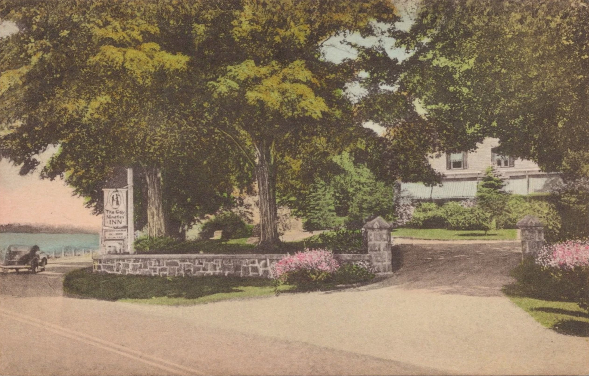
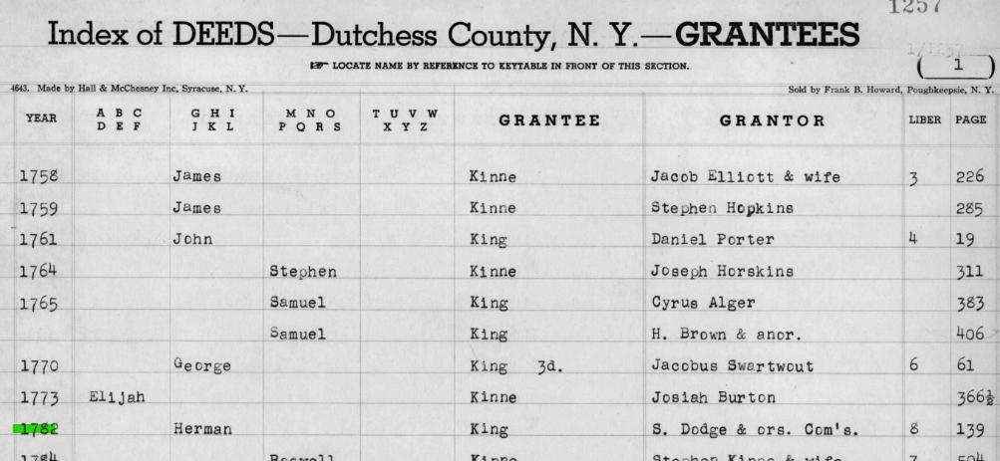
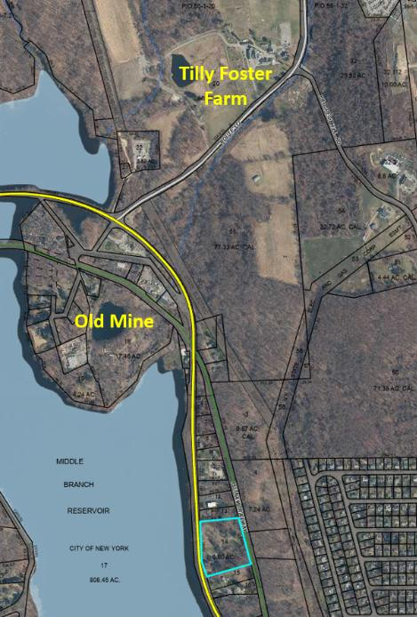
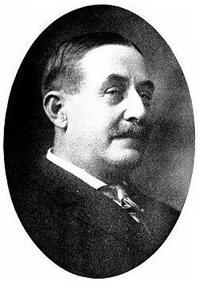
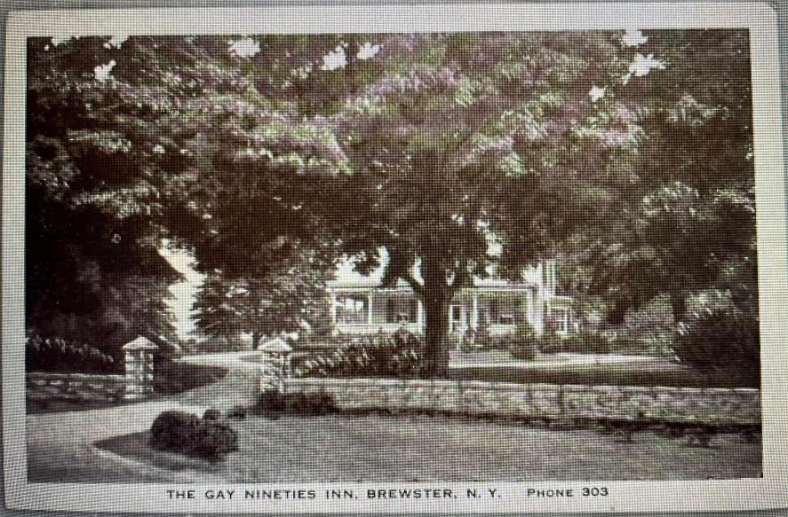
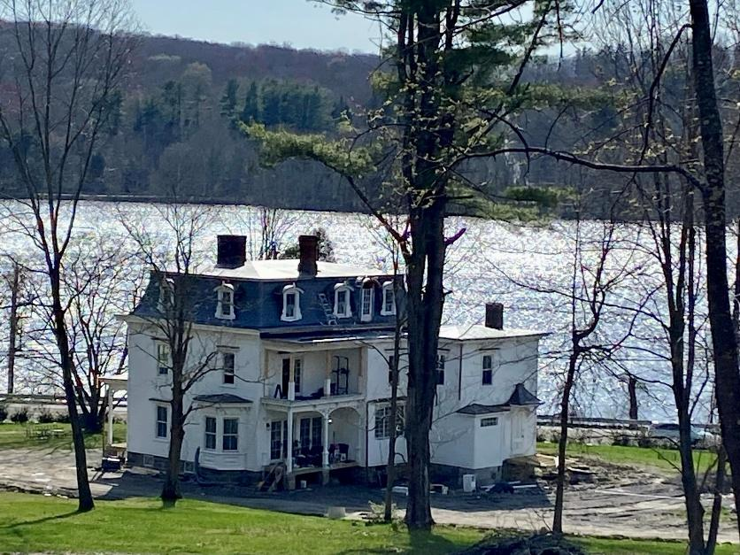
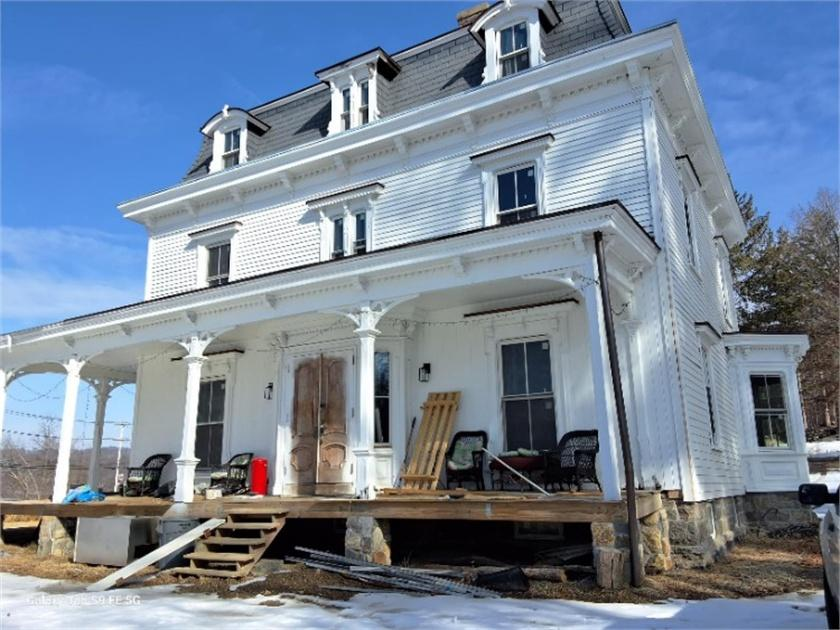

The Gay Nineties Inn & The Yale House
240 years of Putnam County ownership, traced from 2022 back to 1782.
Just west of Brewster village along Route 6, on a parcel that today overlooks the Middle Branch Reservoir, stands a French Second Empire house with a mansard roof and a wraparound porch. It has, in different lifetimes, been a working farm, an Assembly politician’s estate, a 1930s roadside inn, and the wartime headquarters of two Brooklyn investors. The deed chain that defines it runs unbroken from a Revolutionary War forfeiture sale in 1782 down to its current owner’s purchase from the Town of Southeast in 2022 — 240 years across the same eight or so acres.
What follows is a record of that chain.
Before the Republic · pre-1782 Colonial Origins and Revolutionary Forfeiture
The land on which this property stands was almost certainly part of a colonial-era land grant or patent in what was then Dutchess County, New York — Putnam County was not created until June 12, 1812, carved out of the southern portion of Dutchess. The Southeast area sat within the broader sphere of the large colonial grants that defined land ownership in this part of the Hudson Valley through the eighteenth century.
During the Revolutionary War, Putnam County was bitterly contested terrain. The county sits just north of the Neutral Ground between British-held New York City and Patriot-held territory, and loyalties were sharply divided. After American independence, New York State moved aggressively to confiscate and sell lands owned by Loyalists who had supported the Crown. The Commissioners of Forfeiture were established by state law to manage these sales, and their transactions form some of the oldest deed records in Putnam County.
In 1782, the Commissioners of Forfeiture — S. Dodge and others — conveyed this land to Herman King of the Town of Southeast (Book 8, Page 139). This deed has not yet been physically examined; its existence in the index confirms that the property chain begins with a post-Revolutionary War forfeiture sale. The land was literally born into American hands through the dispossession of its Loyalist owner. The identity of that original Loyalist landowner remains to be established.

1782–1830 The King Family Farm
Herman King and his wife Susanna held this land for over thirty years following the 1782 acquisition. In May 1815, Herman King sold approximately 60 acres to his neighbor George Beal for $1,200 — a substantial sum representing a genuine arm’s-length transaction. The deed, witnessed by Jonathan Morehouse and Belden Crane and acknowledged before William Brown, a Master in Chancery, was not recorded until June 21, 1824 — a nine-year delay entirely typical of rural Putnam County practice. (Note: the spelling throughout the deed records is Beal, not Beale.)
The boundaries of the 1815 King-to-Beal deed establish the same landscape that would define this property for the next two centuries: the lands of Zebulon Phillips to the southeast, the highway (Route 6) to the northwest, Major Fowler’s land to the west, and Ezra Barnum’s land to the north. These family names — Phillips, Fowler, Barnum, Cole — echo through every deed in this chain for the next hundred years.
In 1824, Stephen King of Fishkill, Dutchess County — likely Herman’s brother or relative — executed a quitclaim deed to Beal for the nominal sum of $10, releasing any residual King family claim on the property. This title clearance deed was recorded the same day as the original King deed, August 21, 1824, suggesting Beal was finally tidying up his title in preparation for a sale.
1815–1830 George Beal and the Assembly
George Beal of Southeast held the King parcel for roughly fifteen years, during which time he assembled additional adjacent acreage. When he sold to Tilly Foster on April 1, 1830, the parcel had grown from 60 acres to approximately 128 acres — a plat map was attached to the deed, indicating a formal survey had been done. The sale price was $3,598, reflecting the expanded holding.
1830–c.1842 Tilly Foster — The Connecticut Investor and the Iron Mine
The 1830 deed reveals a surprising fact: Tilly Foster was not a local Southeast man at all. He was a resident of the Town of Washington, Litchfield County, Connecticut — a Connecticut investor who paid $3,598 for 128 acres in Putnam County. He appears never to have lived on the property himself.
Foster was an active land acquirer in Southeast during the 1830s and 1840s, assembling multiple parcels under separate deeds. The land that would become the Tilly Foster Mine and the land that is today the Tilly Foster Farm were almost certainly acquired by Foster under different deeds, and passed through entirely separate chains of title after his death. What connects them is simply the man’s name — attached permanently to this corner of Southeast through the iron mine that bears it.

The Tilly Foster Mine — located approximately two miles west of Brewster village along Route 6 — did not open until 1853, a decade after Foster’s death. At its peak in the 1870s it employed hundreds of miners producing 7,000 tons of ore per month. From 1887 to 1889 it operated as an open pit — at that time the largest open-pit mine in the world. A catastrophic collapse in 1895 killed 13 miners, and the pit subsequently flooded. Today it is the water-filled depression visible on aerial photographs just north of the Middle Branch Reservoir, its surface still visited by the occasional scuba diver.
The farm portion of Foster’s holding lay to the south. Foster died circa 1842. His widow Mary Foster and his executors — Jesse Kelly and Samuel Kelly of Southeast — administered his Putnam County estate. An 1841 mortgage from Foster to Polly Fowler ($3,000, Liber L of Mortgages, p. 130) was presumably satisfied as part of the settlement.
1844–1882 Isaac Kelley and the Assembled Estate
Isaac Kelley of Southeast, almost certainly a relative of the Kelly family executors, purchased Tilly Foster’s entire ~192-acre holding for $7,400 on April 15, 1844. He then methodically expanded his holdings: acquiring an additional ~20 acres from Benjamin Fowler and wife Mary Ann in 1845 for $850; ~41 acres along the Croton River from the Crosby family executors in 1846 for $200; and a further parcel from William Clausen around 1849.
Of Kelley’s assembled estate, the ~67-acre parcel he eventually conveyed to Peter Kirkham became 2360 Route 6. The larger residue — roughly 199 acres — is almost certainly what is today the Tilly Foster Farm, confirming that these two neighboring properties were once a single holding under Isaac Kelley, divided when he carved off the Kirkham parcel in 1882.
The Kelley-to-Kirkham deed was signed on April 26, 1882, but not recorded until April 3, 1890 — another eight-year delay. The recording was almost certainly prompted by the 1891 conveyance from Peter to Henrietta Kirkham, which required a clean recorded chain of title.
1882–1916 The Kirkham Farm
Peter G. Kirkham and his wife Henrietta held the farm during the period in which the house that still stands was almost certainly built or substantially improved. The French Second Empire style of the structure — with its distinctive mansard roof, dormers, wraparound porch, and bay window — dates architecturally to the 1860s–1880s, placing its construction squarely in this era. In April 1891, Peter conveyed the property to Henrietta for a nominal dollar, a standard estate planning move acknowledged by A. J. Miller — the same notary who had handled the 1882 Kelley deed.
By 1916 the property had passed to Nellie F. Kirkham, likely their daughter or daughter-in-law, then living in the Town of Kent. On July 28, 1916, Nellie sold the farm to two Southeast men: John R. Yale and Edward D. Stannard, for $100 plus a $6,000 mortgage. The Kirkham family’s connection to the land was over.
By the time the Kirkhams held this farm, the entire western boundary — labeled “City of New York” in the 1882 deed — reflected a transformation already underway. The Middle Branch Reservoir, visible today immediately west of the property along Route 6, had been created in 1878 by damming the Middle Branch of the Croton River as part of New York City’s expanding water supply system. Between 1878 and 1911, multiple tributaries of the Croton were dammed, covering more than 1,400 acres of Southeast’s landscape. The Kirkham family farmed on the eastern edge of what was becoming New York City’s watershed — a boundary that has defined the western horizon of this property ever since.
1916–1925 John R. Yale — The Politician’s Estate

John Reed Yale (May 8, 1855 – July 17, 1925) was the most prominent political figure in Putnam County. Born in Patterson, the son of Belden Yale (1821–1910) and Margaret Glennen, he was a real estate expert, assessor, and businessman who built the Brewster water supply system and served as President of Brewster Water Works.
Yale served in the New York State Assembly representing Putnam County nearly continuously from 1902 through 1925 — in 1902, 1903, 1904, 1905, 1906, 1907, 1908, 1909, 1910, 1911, 1912, 1913, and again in 1921, 1922, 1923, 1924, and 1925 — making him one of the longest-serving members of the Assembly at his death. He chaired the Committee on Electricity, Gas and Water Supply (1908–1910, 1912) and the Committee on Railroads (1922). He was a delegate to the 1904 Republican National Convention that nominated Theodore Roosevelt, and a member of the Masonic Fraternity, the Odd Fellows, and the Elks. Yale was also Vice Chairman of the New York State Commission for the Panama–Pacific International Exposition in 1915.
Family
Yale married Alice Penny on May 8, 1880, in Patterson, Putnam County. They had five daughters: Beatrice M. (1882–1963), Anna M. (1884–deceased), Daisy L. (1886–1970), Edna A. (1887–1889, died in infancy), and Florence Louise (1890–1933). Alice Penny Yale died in 1921, four years before her husband.
His daughter Florence Louise Yale married Captain Philip D. Hoyt, New York City’s First Deputy Police Commissioner and the father of modern traffic control in New York, a Princeton graduate. Philip’s father, Morgan Howes Hoyt, was Putnam County Democratic chairman who launched Franklin D. Roosevelt’s political career during his first New York State Senate campaign in 1910 — FDR remained a lifelong correspondent, referring to him as “Morgan Hoyt has been introducing me for 100 years.” James Forrestal, the first United States Secretary of Defense, was a close friend of Philip Hoyt’s at Princeton.
Why this property
The Yale family’s roots in Southeast ran deep, and specifically in the neighborhood along Sodom Road and Brewster Hill Road — the area just south of where the City of New York was simultaneously flooding land to create the reservoir system from 1878 onward. Deed research in that neighborhood shows Enos C. Yale — a cousin of John R.’s, both descending from the Yale family patriarch Benjamin Yale (1714–1761) though through different branches — as a boundary neighbor across multiple lots in that area. By 1890, John R. Yale himself bounded one parcel on three sides, and the property assessor’s card for that lot carries the tab “Yale House” — a geographic reference reflecting that Yale’s land surrounded the parcel on three sides, confirmed by complete deed index research not to reflect actual Yale ownership of that lot. Significantly, the Penny family — William A. and Mary Penny — owned adjacent lots on the same road, and Yale married Alice Penny in 1880. The Pennys were almost certainly the neighboring family from whom he took his wife.
Against this background, the 1916 acquisition of the Route 6 property reads as a deliberate statement. Yale was 61 years old, with a successful Assembly career, and his wife’s family neighborhood was being steadily absorbed by the City of New York watershed. The grander Second Empire house on the main highway — visible, prominent, on 67 acres — was the estate of a man who had arrived. The Sodom Road neighborhood was where the Yale family came from; 2360 Route 6 was where John R. Yale chose to end.
The end
As Yale’s health declined in spring 1925 — he was dying of cancer — careful estate planning was underway. His wife Alice had been dead four years. On April 27, 1925, he conveyed the Route 6 property to his eldest daughter Beatrice M. Yale (except a small parcel to Ruth J. Kemble). Eighty-one days later, on July 2, 1925, Beatrice sold to Business Adjustment, Inc. of Mount Kisco. Yale died fifteen days after that, on July 17, 1925, at Albany Hospital, after a cancer operation. He was buried at Milltown Cemetery in Brewster — a short distance from this property.
1926–1937 Dollie Smith and the Assembled Estate
Mary A. Smith, known as Dollie Smith, of Lake Mahopac, acquired the ~66-acre property in 1926 subject to a $13,000 mortgage, having already been assembling adjacent parcels via Lake Mahopac Realty since 1914. She carved out portions to Gifford (1928) and Murello (1929), and executed a railroad water pipe agreement with the NY Central in 1928. Her Last Will with codicil dated November 15, 1930 disposed of the residuary estate among five beneficiaries. She died before June 1935.
The Surrogate’s Decree of May 13, 1935 distributed the estate to five heirs. By October 1937, all six heirs (including heirs of the deceased Susan E. Crisp) conveyed the entire property by warranty deed to The Gay Nineties Inn, Incorporated — subject to a $13,900 mortgage and anchored by the controlling Tuthill survey of September 21, 1937.
1937–1945 The Gay Nineties Inn, Incorporated
Under President Mary C. Hoffmann and Secretary Helen A. Fowler, The Gay Nineties Inn operated from its principal office on Carmel Road, Brewster. The inn became well enough known that a postcard was published by Hope’s Drug Store, Brewster, showing the white Victorian facade with the three-digit telephone number 303.

A note on one surviving postcard reads simply: “Stopping here for delicious lunch.” The name evoked nostalgic warmth for the 1890s — a popular theme during the Depression and wartime years.
The wartime years proved difficult, and on August 30, 1945 — weeks after V–J Day — the Gay Nineties Inn, Inc. conveyed the property to Brooklyn investors Louis A. Held (3/4) and Paul M. Frappollo (1/4), with Brooklyn attorney Aaron Goody handling the transaction.
1945–1979 The Brooklyn Years, Three Springs Inc., and Emma Williams
Held and Frappollo quickly reconveyed to The Three Springs, Inc., also through Aaron Goody’s Brooklyn office. After the corporation wound down in May 1949, Held sold to local Brewster resident Emma W. Williams for a $14,000 mortgage — a caretaker was in the main house at the time of sale.
Emma W. Williams held the property for approximately thirty years — the longest single ownership in the modern chain. By 1979 her address had shifted to Route 52, R.F.D. #5, Carmel. The use of the property during this era has not been fully documented from primary sources.
1979–2013 The Kirson-Morini Partnership
On September 7, 1979, Williams sold to three men as tenants in common: Steven J. Kirson (Mahopac), Robert P. Morini (173 Main Street, Brewster), and Paul B. Liles (Queens). In March 1987, Liles quitclaimed to Stuart Lichter and Barry Lang of Covington Capital, Larchmont — business partners who received 50% each of Liles’ share. Kirson and Morini held their original interests for 34 years.
Robert Morini was an active Brewster-area real estate figure and investor. In September 2000 he purchased the Cameo Theater at 63 Main Street, Brewster — Putnam County’s first movie house, opened 1939, closed 1997 — for $195,000 from Southeast resident Denise Quinn, operating it through Cameo Brewster LLC. He pursued but was ultimately unable to complete a full restoration, which was estimated to cost between $750,000 and $1 million.
In December 2013, all four partners — Lang (Los Angeles), Lichter (Downey CA), Kirson (Bluffton SC), and Morini (Carmel NY) — conveyed their interests to the Town of Southeast in a coordinated negotiated sale handled by New York Title Research (Title No. NYT16845), all recorded simultaneously on February 11, 2014.
2013–2022 The Town of Southeast and the Surplus Sale
The Town of Southeast held the property for approximately nine years. In November 2021 it was declared surplus. On June 10, 2022, the Town — represented by Supervisor Tony Hay — sold to Preke Radoina, handled by CATIC Title Insurance (Title No. CAT21-4651-P) with a new survey by Howard W. Weeden, P.L.S., P.C. of Walden, NY.
2022–present Restoration and Revival
Preke Radoina of New York acquired the property on June 10, 2022. The Weeden survey established current acreage at 5.424 acres (Parcel I) and 2.727 acres (Parcel II), totaling 8.151 acres. The former NY Central Railroad Putnam Division — which for over a century physically divided the two parcels — is now the Putnam Trail bike path.
The property is currently under active renovation — new porch decking, fresh white paint. The French Second Empire bones are intact after 140+ years.


“I regret to inform you that the house won’t be a restaurant. Despite our desire and enthusiasm for you to dine there, the numerous rules and regulations make it impossible. Our goal is to gradually restore the house to its former glory and enjoy it with our family, friends, and everyone who shares our love for this place.”
— Preke Radoina, Facebook, 2024
From a post-Revolutionary War forfeiture sale in 1782, through a Connecticut investor who owned the land above a future iron mine, a family farm, a politician’s estate, and a beloved roadside inn — this house on Route 6 carries 240+ years of Putnam County history in its walls.
Complete Deed Chain
All deeds recorded in the Putnam County Clerk’s Office, Carmel, New York. Chain traced from 2022 back to 1782.
| Date | Grantor → Grantee | Reference | Notes |
|---|---|---|---|
| pre-1782 | Unknown Loyalist landowner | — | Pre-Revolutionary era; colonial patent in what was then Dutchess County. |
| 1782 | S. Dodge & ors., Commissioners of Forfeiture → Herman King | Bk. 8, p. 139 | Post-Revolutionary War forfeiture sale. Deed not yet examined — archives request required. |
| May 1815 rec. Jun 21, 1824 | Herman King & Susanna → George Beal | Bk. B, p. 191 | ~60 acres; $1,200; 9-year recording delay. |
| Jun 8, 1824 | Stephen King (Fishkill) → George Beal | Bk. B, p. 215 | Quitclaim; $10 nominal; releases residual King family claim. |
| Apr 1, 1830 | George Beal → Tilly Foster (Litchfield Co., CT) | Bk. A[F], p. 232 | ~128 acres; $3,598; plat map attached. Connecticut investor. |
| Apr 15, 1844 | Foster Executors + Mary Foster → Isaac Kelley | Bk. R, p. 206 | ~192 acres; $7,400. Subject to 1841 mortgage to Polly Fowler. |
| Apr 2, 1845 | Benjamin & Mary Ann Fowler → Isaac Kelley | Bk. S, p. 80 | ~20 acres; $850. |
| Mar 14, 1846 | Crosby Executors → Isaac Kelley | Bk. S, p. 391 | ~41 acres along Croton River; $200. |
| c.1849 | William Clausen → Isaac Kelley | Bk. V, p. 193 | Deed not yet pulled; completes Kelley’s assembly. |
| Apr 26, 1882 rec. Apr 3, 1890 | Isaac & Antoinette Kelley → Peter G. Kirkham | Bk. 65, p. 573 | ~67 acres; $1 nominal; 8-year recording delay. W boundary: City of New York. |
| Apr 16, 1891 | Peter G. Kirkham → Henrietta Kirkham (his wife) | Bk. 70, p. 155 | $1 nominal; estate planning. |
| Jul 28, 1916 | Nellie F. Kirkham → John R. Yale & Edward D. Stannard | L. 112, p. 141 | ~67 acres; $100 + $4 stamps; mortgage $6,000. |
| Apr 27, 1925 | John R. Yale → Beatrice M. Yale (his daughter) | liber/page not yet pulled | Deathbed estate planning; 81 days before Yale’s death. |
| Jul 2, 1925 | Beatrice M. Yale → Business Adjustment, Inc. | L. 132, p. 292 | $100 + $26 stamps; Yale died 15 days later. |
| Aug 5, 1926 | Business Adjustment, Inc. → Dollie A. Smith | L. 137, p. 17 | $2 nominal; mortgage $13,000; ~66 acres. |
| Oct 26, 1937 | Smith Heirs → The Gay Nineties Inn, Inc. | L. 229, p. 480 | Warranty deed; mortgage $13,900; Tuthill survey controlling. |
| Aug 30, 1945 | Gay Nineties Inn, Inc. → Louis A. Held (3/4) & Paul M. Frappollo (1/4) | L. 298, p. 122 | Inn dissolves; WWII era. |
| Oct 11, 1945 | Held & Frappollo → The Three Springs, Inc. | L. 300, p. 162 | Same principals reconvey to new corporation. |
| May 20, 1949 | The Three Springs, Inc. → Louis A. Held | L. 362, p. 360 | Corporate wind-down. |
| Jul 5, 1949 | Louis A. Held → Emma W. Williams | L. 364, p. 571 | $14,000 mortgage; caretaker in house at sale. |
| Sep 7, 1979 | Emma W. Williams → Kirson, Morini, Liles (tenants in common) | L. 764, p. 303 | Bargain & Sale; $10 nominal. |
| Mar 25, 1987 | Paul B. Liles → Stuart Lichter & Barry Lang | L. 1021, p. 0005 | Quitclaim; 16-month recording delay. |
| Dec 30–31, 2013 | All four partners → Town of Southeast | L. 1943/1944 | Four-deed coordinated sale; Title No. NYT16845. |
| Jun 10, 2022 | Town of Southeast → Preke Radoina | L. 2228, p. 157 | Title No. CAT21-4651-P; Weeden survey Jun 1, 2022. |
Deeds still to pull, in priority order
- Bk. 8, p. 139 (1782) — Commissioners of Forfeiture to Herman King. Must be requested from Putnam County archives. Would establish the Revolutionary War forfeiture context and potentially identify the original Loyalist owner.
- Bk. V, p. 193 (c.1849) — William Clausen to Isaac Kelley.
- Yale to Beatrice M. Yale, April 27, 1925 — liber/page not yet confirmed.
- Yale buyout of Stannard, 1916–1925 — not yet located.
- Lake Mahopac Realty to Dollie Smith, 1914 / 1918 / 1920 — index entries confirmed; deeds not pulled.
- Liber 510, p. 314 — Notice of Appropriation; timing and extent unknown.
Historical questions
- Who was the Loyalist landowner whose property was forfeited in 1782? What colonial patent or grant did the land originate from?
- Was Tilly Foster directly involved with the iron mine rights, or did he simply own the surface land above the deposit?
- What was Dollie Smith’s background, and what drew her to assemble a 66-acre estate in Southeast?
- What was the property used for during the Williams era (1949–1979)?
- What is the precise construction date of the house? French Second Empire style suggests 1860s–1880s — the Kirkham era.
- Who was Edward D. Stannard, and how was his interest in the Yale co-ownership resolved?
Sources Consulted
- Bk. B, p. 191–192 — Herman King & Susanna to George Beal (1815/1824)
- Bk. B, p. 215–216 — Stephen King to George Beal, quitclaim (1824)
- Bk. A[F], p. 232–234 — George Beal to Tilly Foster, with plat map (1830)
- Bk. R, p. 206–208 — Foster executors + Mary Foster to Isaac Kelley (1844)
- Bk. S, p. 80 — Benjamin Fowler & Mary Ann to Isaac Kelley (1845)
- Bk. S, p. 391–392 — Crosby executors to Isaac Kelley (1846)
- Bk. 65, p. 573–574 — Isaac Kelley & Antoinette to Peter G. Kirkham (1882/1890)
- Bk. 70, p. 155–156 — Peter G. Kirkham to Henrietta Kirkham (1891)
- L. 112, p. 141 — Nellie Kirkham to Yale & Stannard (1916)
- L. 132, p. 292 — Beatrice M. Yale to Business Adjustment Inc. (1925)
- L. 137, p. 17 — Business Adjustment Inc. to Dollie Smith (1926)
- Bk. 205, p. 280 — Smith Executors to five heirs (1935)
- L. 215, p. 392 — Smith et al. to Brady & Wittenberg (1936)
- L. 229, p. 480 — Heirs to Gay Nineties Inn Inc., with Tuthill survey (1937)
- L. 298, p. 122 — Gay Nineties Inn Inc. to Held & Frappollo (1945)
- L. 300, p. 162 — Held & Frappollo to Three Springs Inc. (1945)
- L. 362, p. 360 — Three Springs Inc. to Held (1949)
- L. 364, p. 571 — Held to Williams (1949)
- L. 764, p. 303–304 — Williams to Kirson, Morini, Liles (1979)
- L. 1021, p. 0005–0007 — Liles to Lichter & Lang (1987)
- L. 1943, p. 495–501 — Lang and Lichter to Town of Southeast (2013)
- L. 1944, p. 1–5 — Kirson and Morini to Town of Southeast (2013)
- L. 2228, p. 157 — Town of Southeast to Radoina, with Weeden Survey (2022)
- Putnam County Index to Deeds — Grantee volumes (multiple pages)
- Bk. 8, p. 139 (1782) — Commissioners of Forfeiture to Herman King [archives request required]
- Bk. V, p. 193 (c.1849) — Clausen to Kelley
- Yale to Beatrice M. Yale (Apr 27, 1925) — liber/page not yet confirmed
- Wikipedia — John R. Yale, Tilly Foster Mine, Middle Branch Reservoir
- Cinema Treasures — Cameo Theater, Brewster NY
- Putnam County Legislature presentation, “Tilly Foster Farm Overview,” August 25, 2022
- Southeast NY Historian Facebook page, May 2, 2024 (renovation photographs)
- Preke Radoina, Facebook post regarding the restaurant question
- HamletHub — Southeast Town Board Meeting Agenda, November 4, 2021 (surplus declaration)
- PropertyShark — 2360–2366 Route 6, Brewster NY 10509
- Gay Nineties Inn postcard, CardCow.com collection
- Town of Southeast Tax Map, Section 56, Block 1, Lot 14
- Ancestry.com — Yale family tree (confirmed Belden Yale as father; Enos C. Yale as extended family)
- New York Almanack — East Branch Reservoir History, December 2025
- Southeast Centre neighborhood deed research (companion site)
Research by Rob G. · Draft 1, Version 5 · March 2026 · 240 years of ownership history